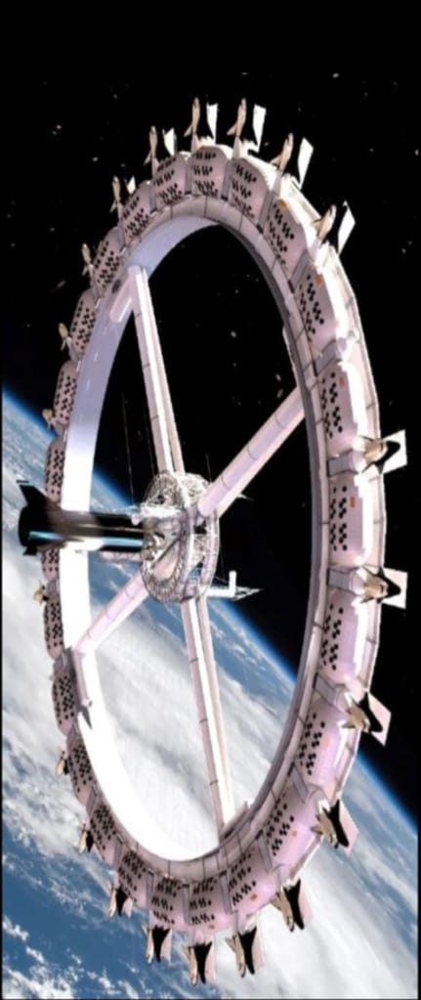

What will be our future?
The future is in our hands, we have to shape it.

INTERGALLACTIC SPACE TRAVELLERS
ADVANCED AI

The future is not what we think, it is going to brighter and harmful,
To make it brighter we need to shape our future.
THESE ARE JUST CONSPIRACY PICTURES, NOT REAL.
The YAL watch as you can probably guess from its design has been inspired by Tron, and uses a number of blue LEDs to tell the time. For example 5 LEDs in the middle, 2 LEDs in the outer branches, 2 more LEDs on the left and PM indicator on = 5h + (2×5)mn + 2 mn + p.m
Merdeka 118 is a geometrically intricate 118 storey office and hotel tower that will be home to the headquarters for Permodalan Nasional Berhad (PNB), one of Malaysia's leading investment firms.It is the world's second-tallest structure, but still shorter than the Burj Khalifa at 828 m (2,717 ft), which is the current tallest building in the world.
NASA in 2021 picked SpaceX's Starship to land humans on the moon around 2025, for the first time since 1972.It requires several spaceflight tests in advance that could delay the 2025 moon landing mission.The rocket will consist of a Super Heavy first stage or a booster and a Starship second stage or spacecraft, powered by Raptor and Raptor Vacuum engines.
The future is in our hands, we have to shape it.
The best way to predict the future is to create it.
मैंने इस वेब पेज से बहुत कुछ सीखा है, इससे मुझे अपने भविष्य को देखने और डिजाइन करने में बहुत मदद मिली है।
இந்த வலைப்பக்கத்திலிருந்து நான் பல விஷயங்களைக் கற்றுக்கொண்டேன், இது எனது எதிர்காலத்தை கற்பனை செய்து வடிவமைக்க மிகவும் உதவியாக இருந்தது.